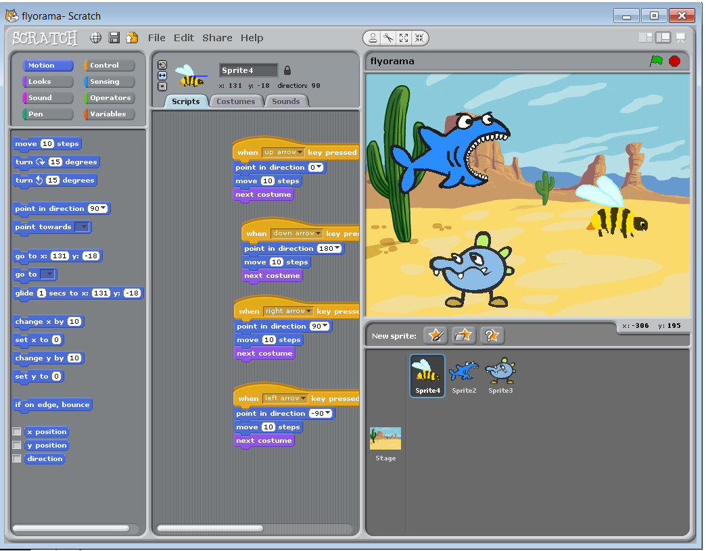
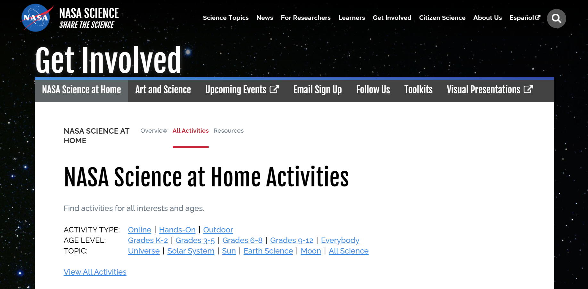
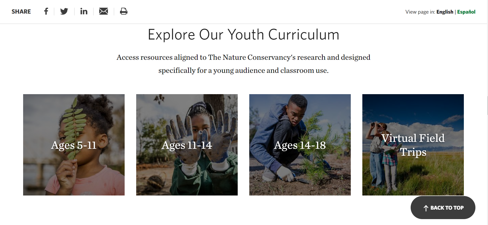
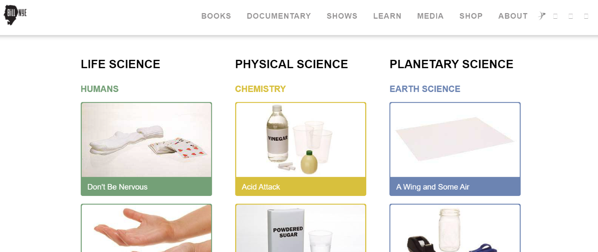
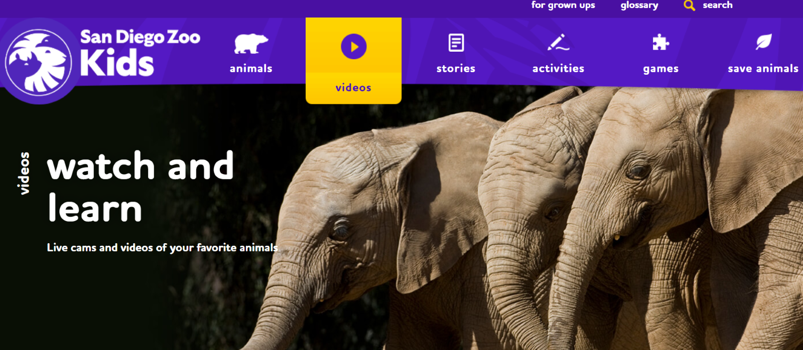

Online STEM Stuff to Do with Your Kids!
By: Daycare PS
In this changing world, our online presence continues to increase. Children are encouraged to become familiar with online interfaces and tools at a young age as a result of the rise of the Internet. Here are some fun activities to do online with your kids while allowing them to learn more about STEM!
-
Kodu
Originally by Microsoft Research, it’s creators state that, “Kodu Game Lab is a 3D game development environment that is designed to teach kids basic programming principles”. Children between the ages of 7 to 13 can utilize this tool to learn more about coding as well as get their creative juices flowing by building worlds and characters of their design. Kodu can be used to teach creativity, problem solving, storytelling, as well as programming. Who knows? Maybe parents can learn something too!

-
Scratch
This is the origin of many coders who have gone on to code great things. Scratch is a platform designed specifically for kids between the ages of 8 to 16, but it can be used by anyone to learn the fundamentals of coding. Scratch users can program their own interactive stories, animations, and games while also having the option of sharing them on the Scratch online community. Whether being entertained with the plentiful games and resources available on the Scratch online community or programming one yourself, Scratch is a great platform for parents and children alike to foster an interest in coding! Look at the tutorial by one of our very own below for more guidance!
 -
NASA Science at Home Activities
NASA has a multitude of tutorials and informational courses gear towards children of any age group. Head to the website above to learn about topics like CubeSat, the stratosphere, solar eclipses, and more!
 -
The Nature Conservancy
Look no further if you are interested in nature. We present **drumroll please** The Nature Conservancy! This is an amazing platform to use if your children are fascinated by creepy crawlies, animals, or plants. With free curriculums, virtual field trips, documentaries, and more, fans of nature have nothing much to yearn for!
 -
Bill Nye The Science Guy's Online Demos
You may know Bill Nye from his TV show and scientific work, but he now has a website with multiple hands-on activities you can do with your children. On this website, you can view numerous scientific demonstrations that you can perform with items that can be found at home. Make sure to supervise your children, and let the experiments begin!
 -
San Diego Zoo
If your kids are fans of animals, this is a great site for you! The San Diego Kids website allows anyone to explore the zoo right at home using their animal cams. Additionally, there are a multitude of other activities and games that can keep them occupied while learning.
